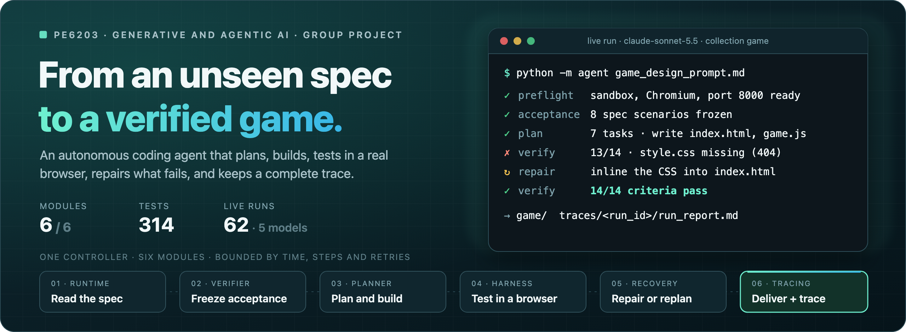
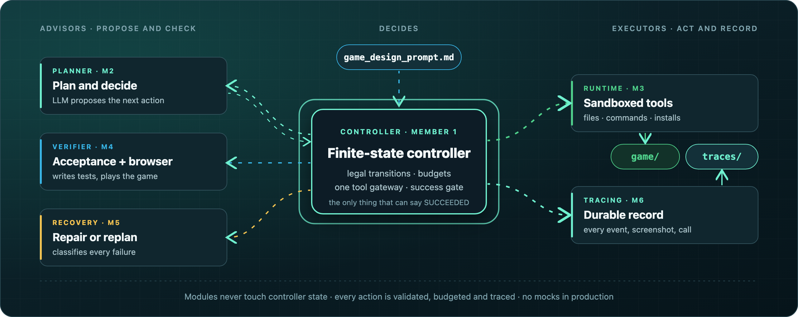
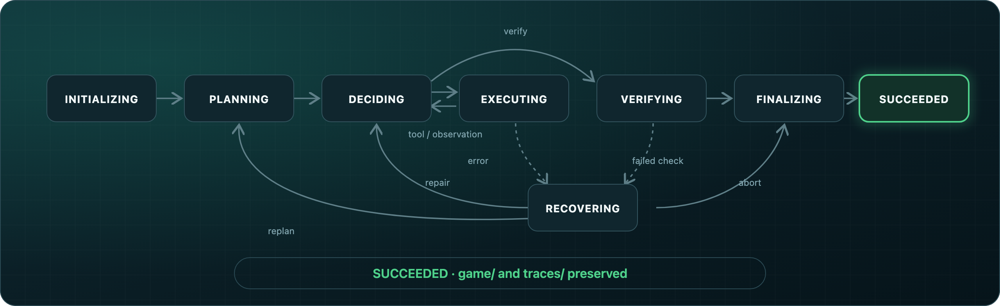
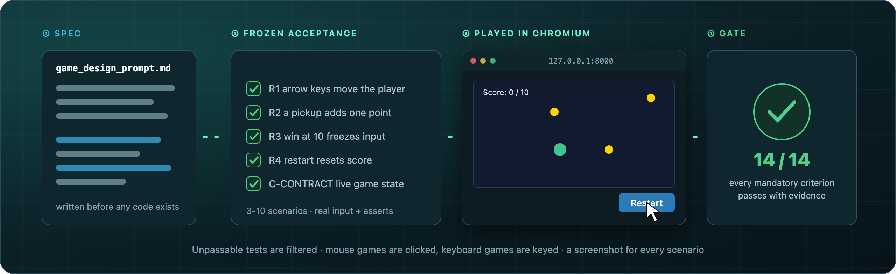

Project report: architecture, planning and verification, failure recovery, evaluation, limitations and next steps

| Member | Name | Module owned |
|---|---|---|
| 1 | ZHOU YU | Controller, CLI, configuration, team contract, integration |
| 2 | JIN ZIYI | Planner: model client, prompts, plan and decision parsing |
| 3 | DAI MINFEI | Tool runtime: files, commands, sandbox, processes, dependencies |
| 4 | ZHOU SIHAN | Verifier: acceptance criteria and the Playwright game harness |
| 5 | LIN SIYUAN | Failure recovery policy and offline evaluation |
| 6 | LI JIAKUN | Tracing, run report and delivery audit |
We built an autonomous coding agent that starts from a single, previously unseen game_design_prompt.md,
writes a complete game into game/, and leaves a full execution record in traces/. The agent is
started with one documented command and needs no human help afterwards. Its distinguishing design choice is that
success is never declared by the language model: a deterministic controller grants success only when every
mandatory acceptance criterion passes on the current code, with evidence, and those criteria are derived from the
specification before any code exists and checked by actually playing the game in a headless browser.

The agent is a single sequential controller (Member 1) with five injected modules. Modules receive an
immutable view of the run and return a typed proposal or observation; they cannot change controller state, call each
other, or run tools themselves. Every file write, command and dependency installation passes through one tool gateway
in the controller, which validates its scope, charges it to the budgets, records it in the trace and only then hands it
to the runtime. All modules are wired by one production factory (agent/integrations.py); test doubles exist
only under tests/.
| Module | Contract | Responsibility |
|---|---|---|
| Controller (M1) | state machine, budgets | Phases, legal transitions, tool gateway, stopping conditions, the success gate |
| Planner (M2) | create_plan, next_decision | Plan from frozen criteria; propose exactly one next action per call |
| Runtime (M3) | execute | Files, commands, installs inside an OS sandbox; process-group cleanup; workspace revisions |
| Verifier (M4) | prepare_acceptance, next_check | Spec-derived acceptance; read-only checks; browser play-testing; evidence |
| Recovery (M5) | recommend_recovery | Classify each failure; recommend RETRY, REPAIR, REPLAN or ABORT |
| Tracing (M6) | open_run, append_event, finalize | Durable events, checkpoints, evidence, run report, delivery check |
docs/INTERFACES.md) before
implementation, so six members could build modules in parallel and integrate them without changing each other's code.
game/ and traces/.Plan. After the acceptance suite is frozen (Section 4), the planner asks the model for 3-8 concrete tasks. Each task must reference acceptance criteria; the plan must cover every mandatory criterion and have an acyclic dependency graph, otherwise it is rejected and regenerated. The plan prompt treats the specification as data that cannot override system policy.
Decide, one action at a time. In the build loop the planner returns exactly one decision per call: a tool
action (write, patch, read, inspect, run, install), a verification request with a launch command, or a plan revision.
Because the controller exposes only the latest result, the planner keeps its own working memory: the files in
game/, the last 25 actions and failures, guard notes, and facts from the start-up self-check (for example
"node is not installed"). This keeps prompts small while preserving context across steps.
Guards. Some rules are enforced in code rather than trusted to the model:
game/README.md
must contain the exact launch command and is written deterministically if missing.{"decision": "read_file"} instead of a tool action of kind read_file. Calls use JSON mode.
Immediately after reading the specification, the verifier asks the model, in the role of an independent tester, for
a state contract and 3-10 executable scenarios. The contract requires the game to expose its real live state
as window.__gameState and a few setup hooks as window.__gameTest (for example placing a
collectible next to the player). A scenario is a list of real inputs (key presses, held keys, clicks on DOM elements or
grid cells) and JavaScript assertions over the state. These criteria are frozen with the generic launch, functional,
interaction and technical criteria; neither planning nor repair can change them.
Model-written tests can be wrong, so each requirement is validated on its own: invalid steps, undeclared hooks, or canvas clicks in a specification without mouse input drop that requirement only. If fewer than three survive, or the call fails, the verifier falls back to the generic criteria and records why.
The harness starts the documented launch command, loads the page in headless Chromium and records JavaScript errors.
It checks the contract on the live object, then runs every scenario on a freshly loaded page, saving a screenshot per
scenario. A failing scenario reports the step that failed and the state after it, for example
step 5 {"expect": "s.status === 'lost'"} … state after: {...}, which is exactly what the planner needs to
repair the game. A generic interaction probe (keys, canvas points, board cells, buttons) and checks for a play surface
complement the scenarios. Terminal and pygame games are verified in a process mode: start without a traceback, keep
running, react to typed moves (pygame input can only be checked statically and is labelled as such).
The controller computes the outcome; a verifier cannot simply claim success. A report passes only if its specification digest, workspace revision and acceptance-suite version are current, every criterion has a result, every mandatory result is PASS with non-empty evidence, at least one verification tool operation succeeded in this cycle, a launch command exists, and the trace is durably preserved.
| Observation | Consequence |
|---|---|
| With generic checks only, all six first-round runs "succeeded", but manual review found specification violations in three of them (for example, walking into the enemy did not lose). | Spec-derived scenarios now catch these: the same "enemy contact loses" rule failed in every cycle on the faulty game, and GLM-5.3 fixed it after one failed cycle. |
| When the harness could only press keys, the agent added keyboard controls and click-anywhere behaviour to a mouse-only memory game to make the probe pass. | Mouse-aware scenarios and the fidelity rule removed this: later runs passed by real clicks with no extra controls. |
Every failure is recorded with its phase and category and goes to the recovery module, which classifies it and recommends one of four decisions. The controller enforces the decision and all limits; modules cannot reset counters.
| Failure class | Decision | Reasoning |
|---|---|---|
| Transient model error (timeout, connection, rate limit, 5xx) | RETRY | Proposal-only calls are safe to repeat; waits 5 s, 15 s, 45 s, 60 s before each retry, within the deadline |
| Malformed model output | REPAIR / REPLAN | Ask again with the parse error visible; an invalid plan is regenerated |
| Command failed, file missing | REPAIR | Inspect output and fix; never replay the unchanged command |
| Timeout or unknown side effects | REPAIR | Never retried blindly; earlier verification is invalidated and the workspace re-inspected |
| Failed verification | REPAIR, periodically REPLAN | The failing steps go to the planner; repeated failure rebuilds the plan |
| Permission, sandbox or credential error; process cleanup failure | ABORT | Retrying cannot help; preserve artifacts and finalize honestly |
Stopping conditions bound every run: total time (including a finalization reserve), steps, commands, retries per
operation, global recovery attempts, and repeated no-progress cycles. Any stop still finalizes the trace and keeps
game/. Before every verification the controller also snapshots the game source into the trace; if a run
ends without success, it restores the version that passed the most mandatory criteria and records the decision. The
outcome stays FAILED or EXHAUSTED: a better partial version never counts as success. In live runs this machinery handled real provider timeouts, malformed JSON (including empty
{} replies from GLM-5.3, which the planner now absorbs without spending recovery attempts), runtime errors in
generated code, and missing files.
Runtime (Member 3). Commands run as argument vectors (no shell) inside an OS sandbox (macOS
sandbox-exec, Linux bwrap) that allows writes only to game/ and the run's private
storage, so generated code cannot modify the agent, the specification or the traces. Each command runs in its own
process group, which is terminated and confirmed gone after every command, timeout or cancellation. Dependencies install
into an isolated environment. Credentials stay in the agent process: commands get a filtered environment and cannot read
agent.env. A start-up self-check stops the run before game/ exists if Chromium, the sandbox, a
free port or Python is missing; python -m agent.preflight --probe-model additionally makes one model call
that must return valid JSON, so a wrong key, endpoint or reasoning setting is caught before the run.
Tracing (Member 6). Every controller event is appended to events.jsonl and is durable before the
controller continues. The trace also holds checkpoints, every verification report, screenshots with a SHA-256 index,
model usage per call (role, tokens, latency) and run_report.md, a readable timeline with each action's
rationale, the frozen criteria, the plans and every verification cycle. finalize re-reads what it wrote
before reporting the delivery as preserved, and python -m agent.delivery audits a finished trace.
226 tests (plus 58 subtests) cover the controller (36), configuration (7), planner (6), runtime and sandbox (22), verifier and harness (26, including real Playwright runs against fixture pages), recovery and evaluation (46), tracing (21), and integration (43, including an offline end-to-end rehearsal with a scripted model and the real sandbox, browser, recovery and tracing), and the final hand-off (19: model probe, source snapshots and best-version restore, rehearsal archiving). A guard test ensures that the agent package contains no game code.
We ran the agent autonomously 39 times on seven specifications (collection, dodge, memory cards, maze, terminal hangman, light switches, turn-based keys) with four models, changing the agent between rounds based on what the traces showed.
| Model | Runs | Succeeded | Observations |
|---|---|---|---|
| GLM-5.3 (course model) | 16 | 14 | Quality close to Claude Sonnet 5.5; more repair cycles on timing-heavy rules; one failure caused by a harness defect, fixed and re-run successfully |
| Claude Sonnet 5.5 | 11 | 11 | Valid scenarios and spec-faithful games in every run |
| GPT-4.1-mini | 8 | 5 | Missed rule details; some generated scenarios could not be passed by a correct game |
| Qwen3-Coder | 4 | 1 | Frequent format errors and unpassable tests |
Round 1 used generic checks only, so its successes are weaker evidence; later rounds used spec-derived
scenarios. Each specification was run once per model and round, and the agent changed between rounds, so these figures indicate
tendencies rather than rates. GLM-5.3: 9 runs during development and 7 in the final rehearsal (Section 7.3).
Full data: docs/testing/LIVE_MODEL_TESTS.md.
A probe before any run revealed a critical behaviour: with no reasoning setting, GLM-5.3 spent all 16 000 output tokens on reasoning and returned no text after 81 s, which would have stopped every planning call. Reasoning cannot be disabled for this model, but a reasoning cap makes it answer in about 5 s with valid JSON. The agent now caps reasoning at 8 000 tokens for GLM models. With that setting:
| Specification | Outcome | Time | Repairs | Notes |
|---|---|---|---|---|
| Collection | succeeded | 39 s | 0 | All 7 scenarios passed first time; reviewed against the spec |
| Terminal hangman | succeeded | 17 s | 0 | Python, process mode; played by hand |
| Light switches | succeeded | 115 s / 202 s | 1 / 1 | Two runs (before and after a harness fix) |
| Turn-based keys | succeeded | 433 s | 1 | Caught and fixed "walking into the enemy does not lose" |
| Dodge | succeeded | 453 s | 5 | Restart and timing rules took several cycles |
| Memory cards | succeeded | 1151 s | 8 | Mouse only; used almost the whole 20-minute budget |
| Maze | failed, then succeeded | 265 s / 235 s | 20 / 6 | First run hit a harness defect (function field in the state contract) and empty replies; both fixed |
The probes and nine runs cost about US$1.7 in total, which also confirmed that the run fits within a presentation slot.
Final rehearsal. After the last changes, all seven specifications were run once more with the course key (OpenRouter) and a 20-minute budget, with no human intervention:
| Specification | Outcome | Time | Steps | Recoveries |
|---|---|---|---|---|
| Collection | succeeded | 48 s | 20 | 0 |
| Memory cards | succeeded | 45 s | 22 | 0 |
| Terminal hangman | succeeded | 23 s | 18 | 0 |
| Light switches | succeeded | 61 s | 41 | 1 |
| Turn-based keys | succeeded | 106 s | 30 | 0 |
| Maze | succeeded | 334 s | 128 | 5 |
| Dodge | exhausted | 1180 s | 166 | 8 |
The dodge run kept failing timing assertions in model-written scenarios (for example a score that had to be exactly
0 at the start of a check while the real-time loop was already adding points). At the deadline the controller restored the
best assessed version (11 mandatory criteria passing) and reported the run as exhausted. The batch cost about US$0.5.
Full data: docs/testing/GLM_REPEAT_20261019.json.
traces/<run_id>/.
--probe-model catches configuration errors, but the final presentation machine still needs a full run.Deterministic time for real-time games. The two improvements planned earlier, keeping the best verified
version and a model connectivity check, are now implemented (Sections 5 and 6). The remaining weak point is real-time
games, whose scenarios currently race the game loop. The state contract will require a pause hook and a
step(ms) hook that advances the simulation by a fixed amount, and the harness will run timing assertions on
a paused game advanced step by step. Assertions such as "the score is still 0" or "an obstacle moves down" then
become exact and repeatable instead of depending on frame timing, which targets the failure seen in the dodge
rehearsal.
A smaller follow-up: standard setup hooks per game type (place an item next to the player, open a grid cell, set a score) to reduce unpassable model-written scenarios.
The team used Codex (OpenAI) and Claude Code (Anthropic) as coding assistants during development. They were used to integrate the members' branches and diagnose and fix cross-module defects found during testing (for example, the data mismatch between the verifier and runtime, the interaction check that failed to detect player movement, and macOS process-group cleanup issues). Members designed and implemented their own modules (see Section 11) and reviewed the integration changes affecting their modules before they were merged into the main branch; subsequent changes were made by Member 1 with the same assistance and are recorded in the Git history.
At run time the agent itself calls only the course-designated model through LiteLLM. It does not invoke any existing coding agent, and it contains no pre-written game code: every game is generated during the run, and a test enforces that the agent package ships no game files.
| Member | Contribution |
|---|---|
| 1 · ZHOU YU | Team interface contract; finite-state controller, budgets and success gate;
configuration and CLI entry point.
|
| 2 · JIN ZIYI | Planning module: model access, planning, and decision generation.
|
| 3 · DAI MINFEI | Tool runtime: workspace operations and command execution.
|
| 4 · ZHOU SIHAN | Verification module: GameVerifier and acceptance criteria.
|
| 5 · LIN SIYUAN | Recovery module: failure classification and recovery policy.
|
| 6 · LI JIAKUN | Tracing and delivery: durable execution records and delivery auditing.
|
| Step | Command |
|---|---|
| Install (once) | pip install -e ".[test]" then python -m playwright install chromium-headless-shell |
| Configure | agent.env next to the specification: AGENT_MODEL=openrouter/z-ai/glm-5.3, OPENROUTER_API_KEY=…, optional AGENT_MAX_RUNTIME |
| Check the machine | python -m agent.preflight, then python -m agent.preflight --probe-model (one billed call) |
| Run | python -m agent game_design_prompt.md |
| Start the game | the command in game/README.md, normally cd game && python3 -m http.server 8000 |
| Inspect the run | traces/<run_id>/run_report.md; audit with python -m agent.delivery traces/<run_id> |